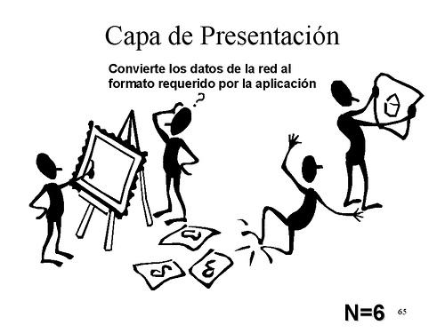

¿Qué es?
El nivel de presentación o capa de presentación es el sexto nivel del Modelo OSI, y es el que se encarga de la representación de la información, de manera que aunque distintos equipos puedan tener diferentes representaciones internas de caracteres (ASCII, Unicode, EBCDIC), números (little-endian tipo Intel, big-endian tipo Motorola), sonido o imágenes, los datos lleguen de manera reconocible.
esta capa es la encargada de manejar las estructuras de datos abstractas y realizar las conversiones de representación de datos necesarias para la correcta interpretación de los mismos.
La capa de presentación es la encargada de:
- Definir el formato de los datos que se van a intercambiar entre las aplicaciones y ofrecer un conjunto de servicios de transformación de datos.
- Definir la sintaxis utilizada entre entidades de aplicación y proporcionar los medios para la selección y modificación de la representación utilizada.
- Codificar los datos en modo estándar (enteros, reales, caracteres, etc.) y realizar funciones de compresión y cifrado de datos.
Cifrado de datos
El cifrado de los datos protege la información durante la transmisión. Las transacciones financieras utilizan el cifrado para proteger la información confidencial que se envía a través de Internet. Se utiliza una clave de cifrado para cifrar los datos en el lugar origen y luego descifrarlos en el lugar destino.
Existen dos tipos de cifrado:
- Cifrado simetrico: Consiste en el uso una única clave para cifrar y descifrar, esta es conocida como clave privada y tiene como característica principal que es robusta.
- Cifrado asimetrico: Consiste en el uso de dos claves, una se usa para cifrar (clave pública) y otra para descifrar (clave privada).